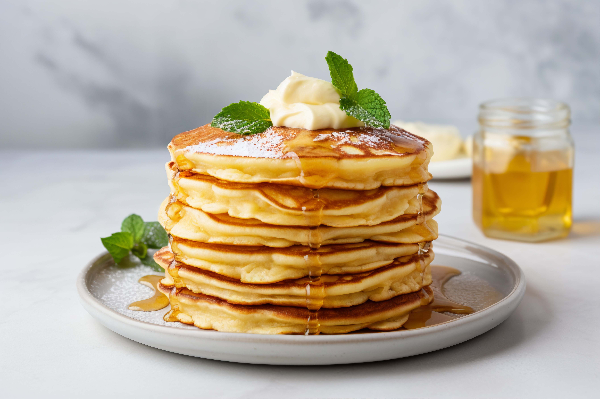

Pancakes Recipe

Soft, fluffy pancakes that make the perfect breakfast. They’re quick to
prepare and taste great with honey, syrup, or fruits on top.
Ingredents
- 1 cup flour
- 1 cup milk
- 1 tsp baking powder
- Butter or oil for frying
Steps
- In a bowl, mix the flour, sugar, and baking powder.
- Add milk and egg, then whisk until smooth.
- Heat a pan with a little butter.
-
Pour a small amount of batter and cook until golden on both sides.
- Serve warm with syrup or fruits.
back home